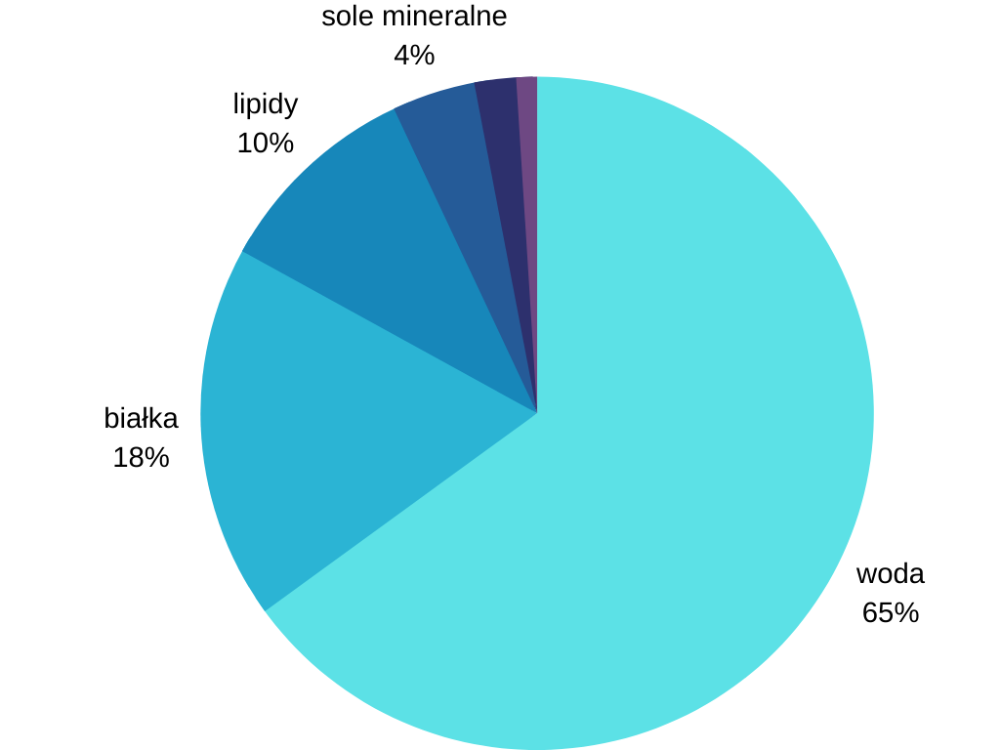
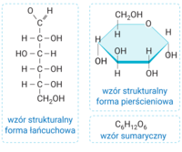
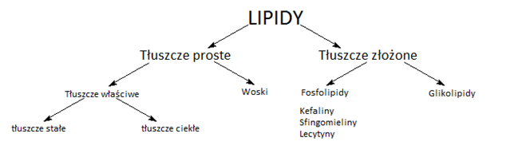
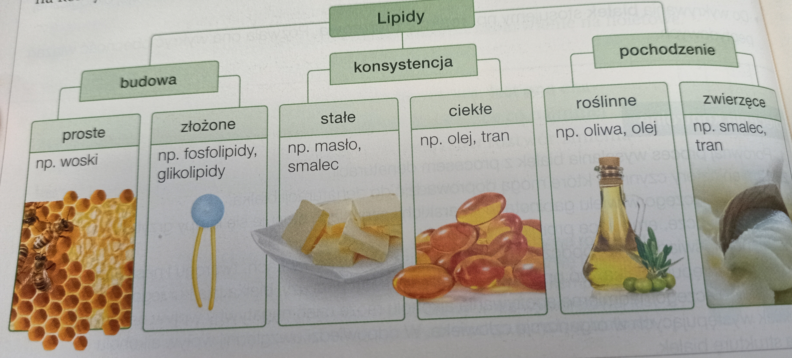
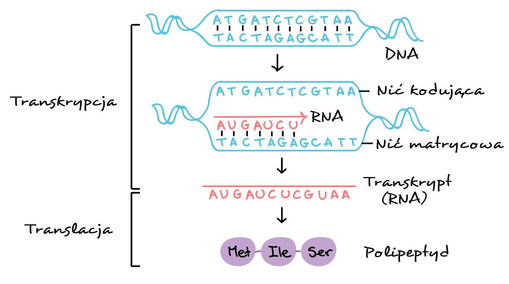
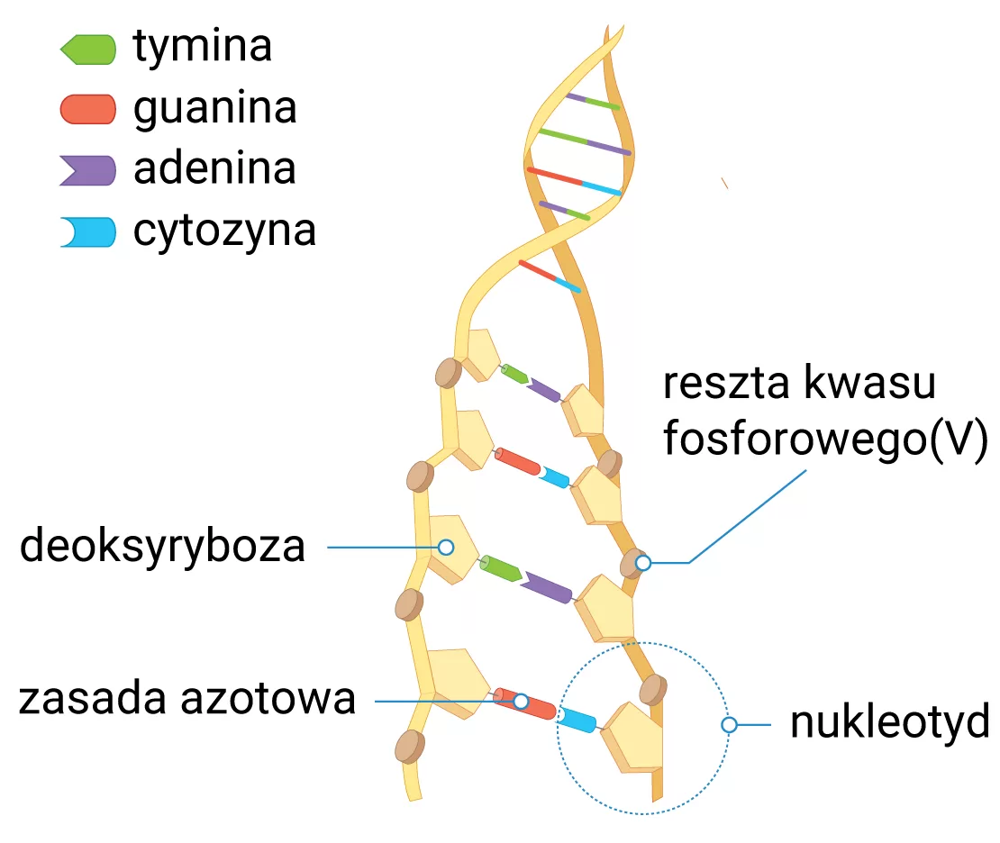
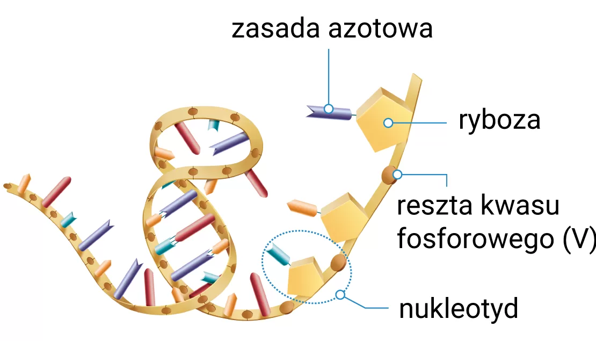

Skład chemiczny organizmów. Makro- i mikroelementy
Pierwiastki-podstawowe składniki chemiczne organizmu
Podstawowymi składnikami chemicznymi każdego organizmu są pierwiastki chemiczne
Łączą się one w związki chemiczne lub występują w postaci jonów - taką postać mają np.
pierwiastki, które tworzą rozpuszczalne w wodzie sole, m.in. chlorek sodu (NaCl)
Wśród związków chemicznych występujących w organizmach wyróżniamy:
związki organiczne, do których należą:
m.in. białka, lipidy, węglowodany i kwasy nukleinowe
zwiądki nieorganiczne, do których należą:
m.in. woda i sole mineralne
W organizmach związki organiczne i nie organiczne występują w różnych ilościach
Ich zawartość w organizmie człowieka możesz prześledzić na poniższym wykresie

Składniki chemiczne organizmów
Pierwiastki chemiczne → związdki chemiczne
→ zwiądki organiczne:
- węglowodany
- białka
- lipidy
- kwasy nukleinowe
→ związki nieorganiczne
- woda
- sole mineralne
Podział pierwiastków na makro- i mikroelementy
Wszystkie pierwiastki wchodzą w skład organizmów dzielimy na makroelementy i mikroelementy
Makroelementy to pierwiastki, które występują w organizmie w dużych ilościach
(stanowią 0,01% lub więcej jego suchej masy)
Do makroelementów w organizmie człowieka zaliczamy jedenaście pierwiastków
Sześć z nich nazywamy
pierwiastkami biogennymi
ponieważ są one głównymi składnikami zwiądków organicznych budującyhc wszystkie organizmy
Są to:
→ węgiel (C)
→ wodór (H)
→ tlen(O)
→ azot (N)
→ fosfor(P)
→ siarka (S)
Jednym z największych pierwiastków biogennych jest węgiel,
którego atomy tworzą stabilne wiązania między sobą oraz z wieloma innymi pierwiastkami
Pozostałe pięć makroelementów to:
→ wapń (Ca)
→ magnez (Mg)
→ potas (K)
→ sód (Na)
→ chlod (Cl)
Mikroelementy to pierwiastki, które występują w organizmie w niewielkich ilościach
(stanowią mniej niż 0,01% jego suchej masy)
Zaliczamy do nich m.in.
→ żelazo (Fe)
→ miedź (cu)
→ jod (I)
→ fluor (F)
→ kobalt (Co)
Podział pierwiastków:
Pierwiastki:
→ makroelementy:
⇒ pierwiastki biogenne:
węgiel (C)
wodór (H)
tlen (O)
azot (N)
fosfor (P)
siarka (S)
⇒ pozostałe makroelementy:
wapń (Ca)
magnez (Mg)
potas (K)
sód (Na)
chlor (Cl)
→ mikroelementy:
żelazo (Fe)
miedź (Cu)
jod (I)
fluor (F)
kobalt (Co)
inne
Znaczenie makro- i mikroelementów
makroelementy - pierwiastki biogenne:
Tlen (O)
jest składnikiem ziwązków organicznych
jest substretem oddychania tlenowego zachodzącego w mitochondrium
Węgiel (C)
jest składnikiem wszystkich związków organicznych
związki węgla - głównie glukoza - ztanowią substrat oddychania tlenowego
Wodór (H)
jest składnikiem związków organicznych
w postaci jonów decyduje o pH płynów ustrojowych, np. krwi i limfy
bierze udział w wytwarzaniu ATP (nośnika energii) w mitochondriach
Azot (N)
jest składnikiem kwasów nukleinowych i białek
Fosfor (P)
jest składnikiem kwasów nukleinowych
występuje w ATP (nośniku energii)
fosforan wapnia buduje kości i zęby
Siarka (S)
jest składnikiem wielu białek, występuje m.in. w białkach budujących włosy i paznokcie
Wapń (Ca)
jest niezbędny do prawidłowego funkcjonowania komórek mięśniowych i nerwowych
buduje kości
uczestniczy w krzepnięciu krwi
Magnez (Mg)
jest niezbędny do prawidłowego funkcjonowania komórek mięśniowych i nerwowych
reguluje działanie enzymów
Sód (Na) i potas (K)
biorą udział w przewodzeniu impulsów nerwowych
uczestniczą w regulowaniu ciśnienia krwi oraz ilości wody w organizmie
Chlor (Cl)
jest składnikiem płynów ustrojowych
jest składnikiem soku żołądkowego
wybrane mikroelementy:
Żelazo (Fe)
wchodzi w skład m.in. hemoglobiny - białka, dzięki któremu erytrocyty transportują tlen
Miedź (Cu)
jest składnikiem enzymów, które uczestniczą w uzyskiwaniu energii
uczestniczy w tworzeniu melanin - barwników skóry
Jod (I)
jest składnikiem hormonów tarczycy, przez co wpływa na pracę serca i układu nerwowego oraz na przemianę materii
Fluor (F)
jest składnikiem szkliwa, które zabezpiecza zęby przed uszkodzeniami chemicznymi
Kobalt (Co)
jest składnikiemwitaminy B któr bierze udział w powstawaniu erytrocynów
Znaczenie wody dla organizmów
Woda - ważny składnik organizmów
Woda jest głównym ziwązkiem nieorganicznym wchodzącymw skład wszystkich organizmów
Jej cząsteczki są zbudowane z atomów wodoru i tlenu
Cząteczka wody ma budowę polarną. Wyróżniamy w niej dwa bieguny - biegun dodatni i biegun ujemny
O → biegun ujemny
H → biegun dodatni
Dzięki budowie polarnej cząsteczki wody mogą łączyć są ze sobą w większe zespoły za pomocą wiązań wodorowych
W ten sposób tworzą się m.in krople wody
Ile wody znajduje się w narzędziach naszego ciała?
Woda w ciele dorosłego człowieka stanowi ok. 65% jego masy
Najmniej wody zawiera szkliwo zębów, a najwięcej - oko
szkliwo → 3%
kości → 25%
wątroba → 68%
skóra → 72%
mózg → 75%
oko → 99%
Jakie znaczenie ma woda dla organizmów
Organizmy potrzebują wody do życia. Nie tylko dlatego, że jest ona głównym składnikiem ich ciała
Lecz także dlatego, aby móc wykonywać różne czynności życiowe
Woda jest również środowiskiem życia wielu organizmów
Znaczeniewody wynika z jej właściwości
Węglowodany - budowa i znaczenie
Budowa i podział węglowodanów
Węglowodany to związki organiczne zbudowane z atomów węgla, wodoru i tlenu
Wyróżniamy wśród nich:
cukry proste
dwucukry, czyli cukry złożone z dwóch cukrów prostych
wielocukry, czyli cukry złożone z wielu cukrów prostych
Podział węglowodorów i ich przedziały przedstawialiśmy na schemacie
Węglowodany:
→ cukry proste (monosachary)
⇒ glukoza
⇒ fruktoza
⇒ galaktoza
⇒ ryboza
⇒ deoksyryboza
→ dwucukry (disacharydy)
⇒ maltoza
⇒ laktoza
⇒ sacharoza
→ wielocukry (polisacharydy)
⇒ skrobia
⇒ glikogen
⇒ celuloza
⇒ chityna
Glukoza:

Cukry proste (monosacharydy)
Cukry proste, które nazywamy też monosacharydami, mają następujące cechy:
→ ich cząsteczki mają szkielet węglowy, w którym występuje od trzech do ośmiu atomów węgla
→ część cukrów prostych (np. glukoza) może wysępować w postaci łańcucha lub -częściej- w postaci pierścienia
→ są słodkie w smaku i dobrze rozpuszczają się w wodzie
Do cukrów prostych należą m.in. glukoza, fruktoza, galaktoza, ryboza oraz deoksyryboza
Dwucukry (disacharydy)
Dwucukry, inaczej - disacharydy, są zbudowane z dwóch cząsteczek cukrów prostych
Dwucukry mają podobne właściwości jak monosacharydy, czyli są słodkie w smaku i dobrze rozpuszczają się w wodzie
Przykładami dwucukrów są m.in. maltoza, laktoza i sacharoza
Wielocukry (polisacharydy)
Wielocukry, czyli polisacharydy, są polimerami
Polimery to duże cząsteczki chemiczne zbudowane z powtarzającyhc się mniejszych elementów - monomerów
Polisacharydy mają inne właściwości niż budujące je monosacharydy - nie są słodkie w smaku
orad słabo rozpuszczają się w wodzie lub nie rozpuszczają się w niej wcale
Przykładami wielocukrów są skrobia, glikogen, celuloza oraz chityna
Jeden cukier prosty - wiele możliwości
Dwucukry:
maltoza = glukoza + glukoza
laktoza = glukoza + galaktoza
sacharoza = glukoza + fruktoza
Wielocukry:
skrobia/celuloza/glikogen = x * glukoza
Znaczenie węglowodanów
Glukoza
Jest podstawowym źródłem energii dla komórek
Wchodzi w skład większości dwu- i wielocukrów
Fruktoza
Stanowi dodatkowe źródło energii dla komórek, ponieważ jest łatwo przekształcana w glukozę
Wchodzi w skład niektórych dwu- i wielocukrów
Występuje w owocach i miodzie
Galaktoza
Jest skladnikiem laktozy oraz niektórych wielocukrów
Stanowi źródło energii dla komórek
Deoksyryboza
Jest składnikiem DNA (kwasu deoksyrybonukleinowego) -związku, który jest nośnikiem informacji genetycznej
Ryboza
Jest składnikiem RNA (kwasu rybonukleinowego) - związku, który uczestniczy w powsatwaniu białek
Dwucukry (disacharydy)
Maltoza (cukier składowy)
Jest produktem rozkładu skrobi, zawiera np. w ziarnach zbóż
Człowiek wykorzystuje ją jako substancją słodzącą oraz do produkcji piwa
Laktoza (sukier mlekowy)
Jest składnikiem mleka ssaków
Stanowi źródło energii dla komórek
Sacharoza (cukier buraczany, trzcinowy)
Jest główną formą transportową cukrów u roślin
Człowiek wykorzystuje sacharozę w przemyśle spożywczym jako substancję słodzącą
Wielocukry (polisacharydy)
Skrobia
Stanowi materiał zapasowy u roślin
Występuje m.in. w bulwach ziemniaka i ziarnach zbóż
Skrobia jest trawiona w układzie pokarmowym człowieka, dzięki czmeu stanowi źródło cukrów prostych dla organizmu
Glikogen
Jest materiałem zapasowym u zwierząt i grzybów
W organizmie człowieka jest grmoadzony w komórkach wątroby i mięśni
Celuloza
Buduje ścianę komórkową roślin
W organizmie człowieka nie jest trawiona, ponieważ nie wytwarza on enzymów odpowiedzialnych za rokład wiązań w cząteczce celulocy
Chityna
Buduje ściany komórkowe grzybów oraz szkielet zwenętrzny stawonogów
np. owadów.
Tworzy twarde stryktury odporne na uszkodzenia mechaniczne
Białka - budulec życia
Jak są zbudowane białka?
Białka sa polimerami zbudowanymi z 20 różnych rodzajów aminokwasów
Połączone ze sobą aminokwasy tworzą łańcuch białkowy
Jeden łańcuch może liczyć od kilkudziesięciu do wielu tysiecy aminokwasów

Podział białek
Jednym z kryteriów podziału białek jest ich budowa
Zgodnie z tym kryterium białka dzielimy na białka proste i białka złożone
Białka proste są zbudowane wyłącznie z aminokwasów
Białka złożone składają się z aminokwasów oraz części niebiałkowej
Funkcje białek
Histony
Histony pełnią funkcję strukturalną
Tworzą podporę dla nawiniętej na nie nici DNA
Występują w jądrze komórkowym
Keratyna
Keratyna pełni funkcję strukturalną
Buduje włosy i paznokcie
Pepsyna
Pepsyna pełni funkcję enzymatyczną
Jest enzymem trawiennym wytwarzanym w żołądku i odpowiada za trawienie białek
Kolagen
Kolagen pełni funkcję strukturalną
Buduje skórę, ścięgna i więzadła
Hemoglobina
Hemoglobina pełni funkcję transportową
Przenosi tlen i dwutlenek węgla we krwi
Globuliny
Globuliny będące przeciwcziałami pełnią funkcję odpornościową
Inne globuliny pełnią funkcję transportową -transportują hormony
Albuminy
Albuminy pełnią funkcję transportową - transportują m.in. hormony, leki, witaminy, oraz jego jony różnych metali
Fibrynogen
Fibrynogen pełni funkcję ochronną
Chroni przed utratą krwi, ponieważ uczestniczy w procesie jej krzepnięcia
Mioglobina
Mioglobina pełni funkcję magazynującą
Gromadzi tlen w mięśniach
Właściwości i wykrywanie białek
Jakie właściwości mają białka?
Większość białek rozpuszcza się w wodzie, tworzac roztwór koloidalny(koloid)
Czyli niejednorodną mieszaninę dwóch substancji
Białka pod wpływem roztworów soli metali lekkich ulegają odwracalnej kolagulacji
Natomiast poddane obróbce termicznej lub pod wpływem alkoholu czy silnych kwasów ulegają denaturacji
Czym jest koagulacja białka?
Kolagulacja to proces polekagący na łączeniu się cząsteczek kologidu w większe struktury
Przykładem kolagulacji jest wysalanie białek pod wpływem doli niektórych metali lekkich
np. chlorku sodu (NaCl)
Na czym polega denaturacja białka?
Denaturacja białka to naruszenie jego struktury przestrzennej pod wpływem czynników fizycznych lub chemicznych
Do czynników fizycznych powodujących denaturację białek należą:
wysoka temperatura (powyżej 40 C)
promieniowaie UV
promieniowanie rentgenowskie
wysokie ciśnienie
Czynniki chemiczne, pod wpływem których dochodzi do denaturacji, to:
stężone kwasy i zasady
sole metali ciężkich (np. rtęci)
alkohole (np. etanol)
Lipidy - budowa i znaczenie
Z czego są zbudowane lipidy?
Lipidy należą do związków organicznych
Ich cząsteczki zawierają węgiel, wodór i tlen
W skład niektórych lipidów mogą też wchodzić azot lub fosfor
Ze względu na buzowę lipidy dzielimy na proste i złożone
Pod względem chemicznym lipidy proste są estrami alkoholi, np. glicerolu, i kwasów tłuszczowych
Natomiast lipidy złożone oprócz alkoholu i kwasów tłuszczowych zawierają też inne związki, np. cukry
Podział lipidów ze względu na budowe:

Jak inaczej podzielić lipidy?

Lipidy proste
lipidy proste = alkohol + kwasy tłuszczowe
Kwasy tłuszczowe nasycone
Znajdują się w tłuszczach zwierzęcych, np. w maśle
Kwasy tłuszczowe nienasycone
występują głównie w tłuszczach roślinnych, takich jak olej
Woski
Woski zawierają kwasy tłuszczowe i inny alkohol niż glicerol
Dzięki temu, że nie rozpuszczają się w wodzie, stanowią warstwę ochronną na powierzchni ciała wielu rożlin i zwierząt
Wosk wydzielany przez pszczoły jest przez nie wykorzystywany do budowy plastrów w ulu.
Lipidy złożone
lipidy złożone = alkohol + kwasy tłuszczowe + dodatkowe związki
Budowa fosfolipidu:

Jaką rolę odgrywają lipidy?
Lipidy są grupą związków o bardzo zróżnicowanej budowie, dlatego pełnią w organizmach różnorodne funkcje
Lipidy proste:
Tłuszcze właściwe:
Stanowią wysokoenergetyczny materiał zapasowy organizmów
Wysępują np.w nasionach słonecznika
Tworzą warstwę podskórną, która pełni funkcję termoizolacyjną np. u ssaków
Stanowią też ochronnę mechaniczną narządów wewnętrznych
Woski:
Tworzą powłokę na powierzchni roślin, dzięki czemu chronią je przed nadmiernym parowaniem wody.
Tworzą nieprzemakalną powłokę na piórach ptaków wodnych
Pióra nie nasiąkają wodą, dlatego ptaki mogą sprawnie się w niej poruszać
Lipidy złożone:
Fosfolipidy i glikolipidy
Pełnią funkcję budulcową
Wchodzą w skład błon biologicznych komórek
Budowa i funkcje kwasów nukleinowych
Rodzaje kwasów nukleinowych
DNA -kwas deoksyrybonukleinowy
RNA -kwas rybonukleinowy
Są one zbudowane z węgla, wodoru, tlenu, azotu i fosforu
DNA i RNA to polimery składające się z nukleotydów
Pojdynczy nukleotyd jest zbudowany z:
zasady azotowej
pięciowęglowego cukru
reszty kwasy fosforowego(V)
Znaczenie i występowanie DNA
DNA jest materiałem genetycznym organizmów oraz niektórych wirusów
DNA nazywamy również nośnikiem informacji genetycznej
RNA->Białko" width="400px" height="300px">
Budowa cząsteczki DNA
 budowa" width="380px" height="400px">
Występowanie i znaczenie RNA
rRNA - rybosomy RNA
tRNA - transpurtujący RNA
mRNA - informacyjny RNA
Główną funkcją RNA jest udziałw syntezie białek:
rRNA buduje rybosomy - struktury odpowiedzialne za łączenie aminokwasów w białka
tRNA transportuje aminokwasy na rybosomy
mRNA prznosi informację o budowie białka z jądra komórkowego na rybosomy
Budowa RNA
 budowa" width="430px" height="400px">
Powtórzenie
Pierwiastki chemiczne łączą się i tworzą związki
Pierwiastki chemiczne → związdki chemiczne
Związki organiczne i nieorganiczne
związki organiczne, do których należą:
m.in. białka, lipidy, węglowodany i kwasy nukleinowe
zwiądki nieorganiczne, do których należą:
m.in. woda i sole mineralne
Makro i mikro elementy
Wszystkie pierwiastki wchofzą w skład organizmów dzielimy na makroelementy i mikroelementy
Makroelementy to pierwiastki, które występują w organizmie w dużych ilościach
Woda → ciało człowieka
Woda w ciele dorosłego człowieka stanowi ok. 65% jego masy
Najmniej wody zawiera szkliwo zębów, a najwięcej - oko
szkliwo → 3%
kości → 25%
wątroba → 68%
skóra → 72%
mózg → 75%
oko → 99%
Cukry → podział i funkcje:
cukry proste, dwucukry i wielocukry
cukry proste
dwucukry, czyli cukry złożone z dwóch cukrów prostych
wielocukry, czyli cukry złożone z wielu cukrów prostych
DNA i RNA
DNA -kwas deoksyrybonukleinowy
RNA -kwas rybonukleinowy
Są one zbudowane z węgla, wodoru, tlenu, azotu i fosforu
DNA i RNA to polimery składające się z nukleotydów
Białka → budowa aminokwasów
Białka sa polimerami zbudowanymi z 20 różnych rodzajów aminokwasów
Połączone ze sobą aminokwasy tworzą łańcuch białkowy
Denaturacja i kolagulacja
Denaturacja białka to naruszenie jego struktury przestrzennej pod wpływem czynników fizycznych lub chemicznych
Kolagulacja to proces polekagący na łączeniu się cząsteczek kologidu w większe struktury
Kwasy nukleinowe
związki organiczne, do których należą: m.in. białka, lipidy, węglowodany i kwasy nukleinowe
zwiądki nieorganiczne, do których należą: m.in. woda i sole mineralne